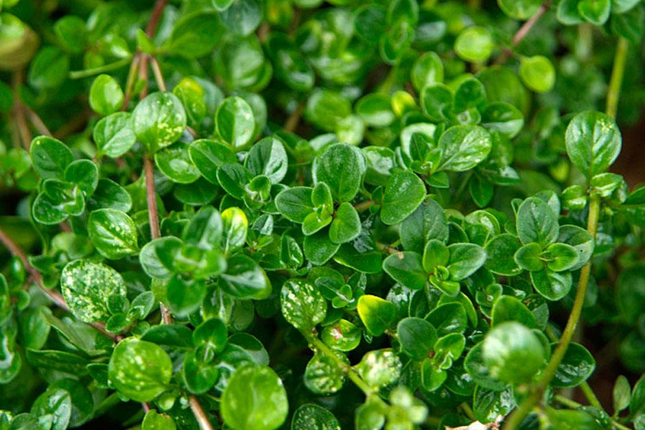

Thyme is a fragrant herb native to the Mediterranean region, often used in cooking, medicine, and aromatherapy.
It is a hardy perennial known for its small, aromatic leaves.
Plant Attributes & Uses
Scientific Classification
Family: Lamiaceae
Genus: Thymus
Species: T. vulgaris
Global Spread
Native to Mediterranean regions, now cultivated worldwide.
Preferred Climate
Warm, dry climates with well-drained soil.
Medicinal Uses
Used to treat coughs, sore throats, and digestive issues.
Traditional Uses
Used in herbal teas and for culinary purposes.
Cosmetic Benefits
Improves skin health, used in skincare products.
Garden Information
Hardiness: Zones 4–8
Climate Zones: Mediterranean, Temperate
Exposure: Full Sun
Soil Type: Well-drained, sandy or loamy soil
Water Needs: Low, drought-tolerant